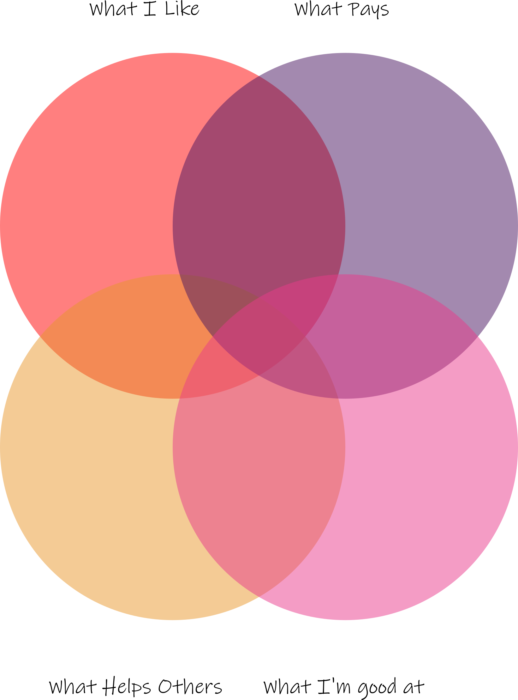

My dream is to have a job that meets these four conditions. I hope by having this in my life, time spent working will be fulfilling, rewarding, and generous. I aim to do this because I want to get satisfaction out of my profession, instead of money at the expense of time and happiness. That being said, I’d still need a way to get food on the table, so a livable wage is a necessity. To achieve this, there are four things I must do.

Currently, Web Design meets all the qualifications right now. I’m having a blast learning it in school, and I know it pays well. While it’s not as humanitarian as doctor, I still think making beautiful, easy-to-use websites can help atleast a few people. The last condition is being skilled at it, and to do that I need to work on step 2
I still have a long way to go before I become a professional Web Developer, so I need to start practicing now. With any luck, I’ll be able to support myself throughout my next step through small, freelance jobs
College is a necessity for me because a bachelor’s degree is practically a minimum to get hired in most companies for a skilled job. I have high hopes for my post-secondary education. I have a shot at making it into some ivy-league colleges, but The University of Washington is a safer bet for me and still a great school. Nonetheless, I’d still be happy a community college because I believe that I can find success if I make the most out of my time in college.
Once I enter the industry in my desired profession, it’s still important to continue to polish and improve my skills at Web Design and other essential skills to my profession. As such, I hope to keep on improving and learning throughout my future career.